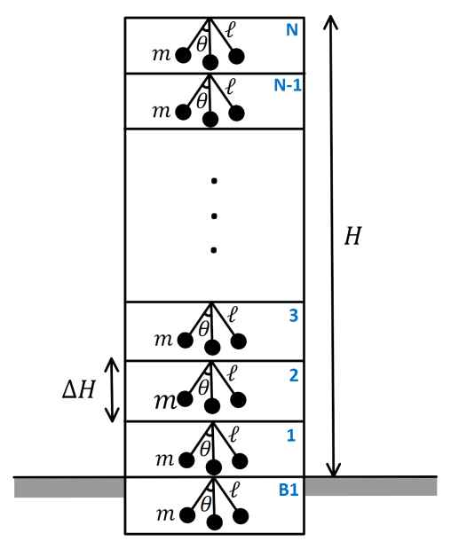

문제 1

어느 행성에 표면으로 부터의 높이 \(H\)인 건물이 지어져 있고, 각 층의 높이는 \(\Delta H\)로 동일하다. 각 층의 구조와 부피 또한 동일하다. 각 층의 천장에 길이 \(\ell\)인 실 끝에 질량 \(m\)인 물체가 달려 있으며, 동일한 시간 \(t = 0\)에 같은 (매우 작은) 진폭 \(\theta\)의 단진자 운동을 시작하였다. 건물은 지하 1층 (B1)에서 부터 지상 \(N\)층까지 총 (\(N+1\))개의 층으로 이루어져 있다.
본 문제에서는 각각의 층에 작용하는 중력 가속도를 각 층의 천장 위치에 작용하는 중력 가속도 값으로 근사한다. (건물의 질량과 물체의 크기, 실의 질량, 공기 저항은 모두 무시한다.)
(1) 건물의 지하 1층 (B1)과 꼭대기 층 (지상 \(N\)층)에서 측정한 단진자의 주기의 비율이 \(T_N / T_{B1}\)로 주어졌을 때, 건물의 행성 표면으로 부터의 높이 \(H\)를 \(T_N / T_{B1}\)과 행성의 반지름 \(R\)의 수식으로 구하시오. (2점)
(2) 건물 \(f\)층의 주기는 (\(f+1\))층의 주기보다 큰가? 작은가? (1점)
(3) 실제 측정 결과 \(T_N / T_{B1} = 1.0001\)이 나왔다. 각 층의 높이가 \(\Delta H = 5\)m이고, 건물은 지하 1층과 지상 \(N = 120\)층으로 이루어져 있을 때, 행성의 반지름 \(R\)값을 구하시오. (2점)